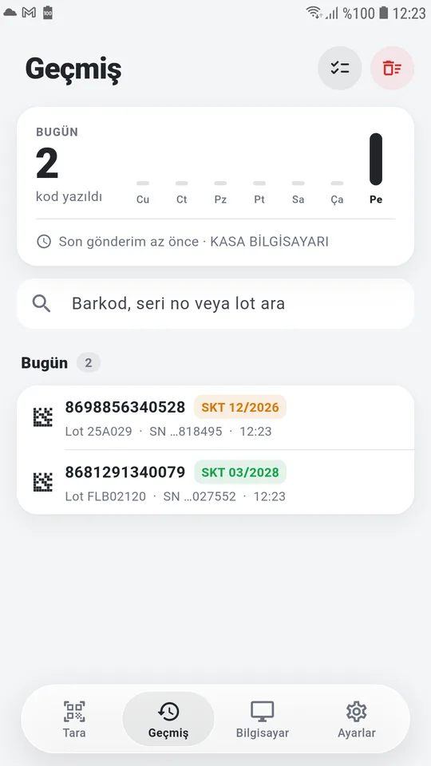

Bilgisayar kurulumu
Botanik'in çalıştığı kasa bilgisayarına bir kez kurulur. Yaklaşık 2 dakika sürer.
- Kurulum dosyasını indirin EczaKod-Kurulum.exe dosyasını indirip çift tıklayın. Bağlantı her zaman en güncel sürümü indirir.
- Windows uyarısını geçin Mavi "Windows kişisel bilgisayarınızı korudu" penceresi çıkarsa Ek bilgi'ye, ardından Yine de çalıştır'a basın. Ardından gelen "Bu uygulamanın cihazınızda değişiklik yapmasına izin veriyor musunuz?" sorusuna Evet deyin.
- Kurulum sihirbazını tamamlayın Windows açılınca EczaKod'u başlat seçeneğini işaretli bırakın; bilgisayar her açıldığında EczaKod kendiliğinden çalışır. İsterseniz masaüstü kısayolu da ekleyebilirsiniz. Kur → Son.
- Güvenlik duvarı izni kendiliğinden verilir Kurulum, telefonun bilgisayara bağlanabilmesi için Windows Güvenlik Duvarı'na izin ekler. Ayrıca bir şey yapmanız gerekmez.
- Eşleştirme penceresi açılır İlk açılışta "EczaKod — Telefon eşleştir" penceresi ve bir QR kod görünür. Telefonu hazırlayınca bu QR'ı okutacaksınız (Adım 3).
EczaKod bir pencere programı değildir; arka planda, saatin yanındaki simgede çalışır. Pencereyi kapatmanız programı kapatmaz.
EczaKod'a görev çubuğundan ulaşma
Ekranın sağ altındaki saatin yanında kırmızı EK simgesi bulunur. Tüm işlemler bu simgeden yapılır.
Simge görünmüyorsa
- Gizli simgelere bakın Saatin solundaki ^ okuna tıklayın; EczaKod simgesi açılan kutudadır.
- Görev çubuğuna sabitleyin Simgeyi o kutudan sürükleyip saatin yanına bırakın. Artık hep görünür.
Windows 11'de ayrıca: Ayarlar → Kişiselleştirme → Görev çubuğu → Diğer sistem tepsisi simgeleri → EczaKod'u açın. Windows 10'da: Görev çubuğuna sağ tık → Görev çubuğu ayarları → Görev çubuğunda hangi simgelerin görüneceğini seçin → EczaKod'u açın. - Hiç yoksa programı başlatın Başlat menüsüne EczaKod yazıp açın. Program zaten açıksa ikinci kopya açılmaz.
Simgenin anlamı
Simgenin üzerine gelince durum yazar (ör. "Bağlı: Kasa telefonu"). Çift tıklamak Günlük penceresini açar.
Sağ tık menüsü
Telefon eşleştir… Yeni telefon eklemek için QR kod gösterir (5 dakika geçerli).
Okuyucuyu duraklat İşaretliyken telefondan gelen kodlar yazılmaz. Bilgisayarda başka iş yaparken kullanın.
Ayarlar… Bilgisayar adı, yazma ayarları, sayım klasörü ve eşleşmiş telefonlar (Adım 7).
Günlük… Ne zaman hangi kodun yazıldığı, bağlantılar ve uyarılar.
Yönetici olarak yeniden başlat Yalnızca Botanik yönetici olarak çalışıyorsa gerekir (Sorun giderme).
Telefon uygulaması ve eşleştirme
Her telefon, kullanacağı bilgisayarla bir kez eşleştirilir. Bir telefon birden çok bilgisayarla (kasa, depo) eşleşebilir.
- Uygulamayı kurun EczaKod'u Google Play'den kurun ve açın. Kamera izni istendiğinde İzin ver deyin.
- Aynı ağa bağlanın Telefon, bilgisayarın bağlı olduğu Wi-Fi ağında olmalı.
- Telefona bir ad verin Ayarlar → telefon adı (ör. "Kasa telefonu"). Bu ad bilgisayarda görünür; sonradan değiştirirseniz bilgisayara da yansır.
- QR kodu okutun Bilgisayarda EK simgesi → Telefon eşleştir…. Telefonda Bilgisayar sekmesi → sağ üstteki + → QR'ı kameraya gösterin.
- Bağlandı Telefonun üst kısmında yeşil noktalı bilgisayar adı görünür. Bilgisayarda da "Kasa telefonu bağlandı" bildirimi çıkar.
Misafir Wi-Fi'ı kullanmayın. Misafir ağlar cihazların birbirini görmesini engeller; telefon bilgisayarı bulamaz. Telefonu bilgisayarın bağlı olduğu ağa bağlayın. Bilgisayar kabloyla bağlıysa, aynı modemin Wi-Fi'ı yeterlidir.
Birden çok bilgisayar: Telefonun üstündeki bilgisayar adına dokunarak eşleşmiş bilgisayarlar arasında geçebilirsiniz. Son seçilen bilgisayar hatırlanır. Aynı bilgisayara aynı anda tek telefon gönderir; başka telefon bağlanırsa öncekine "Başka telefonda" yazar, Devral ile geri alınır.
Satış ekranına okutma
- Botanik'i hazırlayın Bilgisayarda Botanik satış ekranını açın, imleç karekod/barkod alanında olsun. Kodlar öndeki pencereye yazılır.
- Kutuları okutun Telefonda Tara sekmesinde kutuları kameraya gösterin. Birden çok kutu aynı anda okunabilir; her kutu bir kez eklenir.
- Gönderin Gönder'e basın. Kodlar sırayla satış ekranına yazılır, bitince telefonda "yazıldı" görünür.
Tekli ve Toplu mod
⚡ Tekli Okunan kod anında bilgisayara gider; klasik el okuyucusu gibi. Miadı geçmiş kutu kendiliğinden gitmez, listede kırmızı bekler; Gönder ile onaylayarak gönderirsiniz.
☰ Toplu Kodlar listede birikir, Gönder'e basınca hepsi gider. Çok kutulu reçetelerde hızlıdır.
Kameradaki çerçeve renkleri
Gönderilen kutu kameranın önünde kalırsa tekrar eklenmez. Aynı kutuyu bilerek yeniden göndermek isterseniz (ör. Botanik'ten silip tekrar), kutuyu kameradan 2 saniye çekip yeniden gösterin.
Kamera kontrolleri
| Kontrol | Ne işe yarar |
|---|---|
| Yakınlaştırma çubuğu | Küçük ya da uzaktaki karekodlar için 1×–4× yakınlaştırır. |
| Ekrana dokunma | Dokunduğunuz yere odaklar. Bulanık karekodda işe yarar. |
| ◐ Siyah zemin | Siyah zemine beyaz basılmış karekodları da okur (biraz yavaşlatır, gerekmedikçe kapalı tutun). |
| Fener | Loş ortamda kameranın ışığını açar. |
| Liste paneli | Alttaki "Okunanlar" panelini yukarı çekince tüm liste ve SKT'ler görünür; satırdaki çöp kutusu o kodu siler, başlıktaki kırmızı düğme listeyi boşaltır (geri alınabilir). |
Güvenli yazma: Botanik bir uyarı penceresi açarsa ya da gönderim sırasında başka bir pencereye tıklanırsa EczaKod yazmayı durdurur ve telefonda nedenini gösterir; kodlar yanlış yere yazılmaz. Yazılmayan kodlar listede kalır, sorunu giderip yeniden gönderirsiniz. Daha önce yazılmış kodlar ikinci kez yazılmaz.
Stok sayımı
Rafları telefonla tarayın, sayım bilgisayara dosya olarak gelsin. WhatsApp ya da e-postayla dosya taşımaya gerek kalmaz.
- Sayım sekmesine geçin Telefonda alttaki menüden Sayım'ı seçin.
- Rafı tarayın Kamerayı raf boyunca gezdirin. Her karekodlu kutu bir kez sayılır; aynı kutu tekrar görünse de sayı artmaz. Sayı ve SKT dağılımı ekranın altında anlık görünür.
- Gönderin Bitince Gönder'e basın. Bilgisayarda "Sayım alındı: N kutu" bildirimi çıkar; bildirime tıklayınca dosya klasörde seçili açılır.
- Botanik'e aktarın Dosya varsayılan olarak
Belgeler\EczaKod Sayımklasörüne yazılır. Botanik'in sayım aktarma ekranında bu dosyayı seçin. Sayım klasörünü Ayarlar'dan Botanik'in kullandığı klasör olarak da belirleyebilirsiniz.
Kameradaki renkler (son kullanma tarihine göre)
"Miadı yakın" süresi telefonda Ayarlar → Miadı yakın sayılan süre'den seçilir (3, 6 ya da 12 ay).
Yalnız seri numaralı karekod sayılır. Barkodlu (seri numarasız) ürünler sayıma girmez; kamerada gri görünür ve "Bu kod sayılmaz" uyarısı çıkar.
Sayım kaybolmaz. Uygulama kapansa ya da telefon yeniden başlasa da sayım kaldığı yerden sürer. Gönderdikten sonra da silinmez; tekrar gönderilebilir.
Sayım ayrıntısı: Alt çubuktaki kutu sayısına dokununca ürünler, miadı en yakın olan önce olacak şekilde listelenir; barkod, seri no ya da lot ile arayabilir, SKT'ye göre süzebilirsiniz. Yeni sayım düğmesi mevcut sayımı onay sorarak siler.
Geçmiş

Bilgisayara yazılan son 300 kod Geçmiş sekmesinde günlere göre durur. Üstteki kart bugün ve son 7 günde yazılan kod sayısını gösterir.
- Ara: Barkod, seri numarası ya da lot ile.
- Tekrar gönder: Satırı sola kaydırın.
- Seçerek gönder: Sağ üstteki seç düğmesiyle birden çok kod seçip ya da hepsini seçip gönderin.
- Temizle: Sağ üstteki kırmızı düğme geçmişi siler.
Geçmiş yalnızca telefonda tutulur; geçmişten yeniden gönderilen kodlar geçmişe ikinci kez eklenmez.
Ayarlar
Varsayılan ayarlar çoğu eczanede doğrudan çalışır. Kurulumda yalnızca işaretli olanlara bakmanız yeterli.
Bilgisayarda (EK simgesi → Ayarlar…)
Pencerede iki sekme vardır: Ayarlar ve Telefonlar. Değişiklikten sonra Kaydet'e basın.
| Ayar | Ne yapar | Önerilen |
|---|---|---|
| Bilgisayar adı | Telefonda görünen ad. Birden çok bilgisayar varsa ayırt etmeyi kolaylaştırır; değişince telefona da yansır. | Kasa |
| İzinli programlar | Kodların yalnız bu programa yazılmasını sağlar; başka bir pencere öndeyse yazmaz. Boşsa her pencereye yazar. | Botanik |
| Kodlar arası bekleme (ms) | Botanik'in bir kodu işlemesi için tanınan süre. Kod kaçırılıyorsa artırın. | 400 |
| Uyarı bekleme süresi (ms) | Kısa "lütfen bekleyin" pencerelerinin kapanması için en çok bekleme; kapanmazsa yazma durur. | 3000 |
| Sonek | Her koddan sonra basılacak tuş (Enter / Tab / yok). | Enter |
| GS ayracı | Karekoddaki görünmez ayracın nasıl yazılacağı. Kurulumda eczanenin el okuyucusuna göre bir kez ayarlanır. | Unicode |
| Baştaki FNC1'i sil | Kameranın karekod başına eklediği görünmez karakteri siler (el okuyucuları göndermez). | Açık |
| Klavye düzenine göre tuş | Açıkken karakter yerine gerçek tuş basar. Yalnızca bazı eski programlarda gerekir. | Kapalı |
| Tuşlar arası bekleme (ms) | Her tuş arasında bekleme. Karakter kaçıran yavaş bilgisayarlarda 5–10 deneyin. | 0 |
| Sayım klasörü | Stok sayımı dosyalarının yazıldığı klasör. Boşsa Belgeler\EczaKod Sayım. | Boş |
| Satır biçimi | Sayım dosyasında karekodun biçimi: Gs ham karekod, Hri (01)…(21)… biçimi, Plain ayraçsız. | Gs |
| Port | Telefonun bağlandığı kapı. Değiştirirseniz telefonlar yeniden eşleştirilmelidir. | 8765 |
| Windows açılınca başlat | Bilgisayar açılınca EczaKod kendiliğinden çalışır. | Açık |
| Yönetici olarak başlat | Yalnızca Botanik yönetici olarak çalışıyorsa gerekir; Windows yönetici programlara normal programların yazmasına izin vermez. | Gerekirse |
Telefonlar sekmesi: Eşleşmiş telefonlar ve son bağlantı zamanları. Kaybolan ya da artık kullanılmayan telefonu seçip Seçili telefonu kaldır deyin; o telefon yeniden eşleştirilmeden bağlanamaz.
Telefonda (Ayarlar sekmesi)
| Ayar | Ne yapar | Önerilen |
|---|---|---|
| Telefon adı | Bilgisayarda görünen ad (ör. Kasa telefonu). | Kasa telefonu |
| Ses / Titreşim | Her yeni okunan kodda kısa ses ve titreşim. | Açık |
| Siyah zeminli karekod | Ters renkli karekodları da okur, biraz yavaşlatır. | Kapalı |
| Gönderim | Tekli: okunan kod anında gider. Toplu: Gönder ile. | Toplu |
| Görüntü kalitesi | Yüksek, küçük ve uzak karekodlarda daha iyidir; eski telefonlarda yavaşlatabilir. | Standart |
| Miadı yakın sayılan süre | Stok sayımında turuncu görünecek kutuların SKT sınırı. | 3 ay |
Sorun giderme
Telefon, gönderim durursa nedenini yazar. Aynı mesaj bilgisayarda EK simgesi → Günlük…'te de görünür.
Telefon "Bağlı değil" diyor
- Bilgisayarda EK simgesi var mı? Yoksa Başlat menüsünden EczaKod'u açın.
- Telefon ve bilgisayar aynı ağda mı? Misafir Wi-Fi'ı değil, bilgisayarın ağını kullanın.
- EK simgesi → Güvenlik duvarı izni ver… → Evet.
- Telefonda üstteki bilgisayar adına dokunup doğru bilgisayarın seçili olduğuna bakın.
"Eşleşme geçersiz" ya da "Bilgisayar bu telefonu tanımıyor"
Telefon bilgisayarın listesinden kaldırılmış. EK simgesi → Telefon eşleştir… ile QR'ı yeniden okutun.
"Ön plandaki program izinli değil"
Gönder'e basıldığında önde Botanik değil başka bir pencere vardı. Botanik satış ekranını öne alıp yeniden gönderin. Botanik'te de bu uyarı çıkıyorsa Ayarlar → İzinli programlar'daki adı Günlük'teki "Hedef pencere" satırında yazan süreç adıyla değiştirin.
"Yönetici olarak çalışıyor" uyarısı
Botanik yönetici olarak açılmış; Windows, normal programların ona yazmasına izin vermez. EK simgesi → Yönetici olarak yeniden başlat. Kalıcı olsun diye Ayarlar → Yönetici olarak başlat'ı işaretleyin.
Gönderim yarıda durdu
Botanik bir uyarı penceresi açtıysa (ör. miad, İTS uyarısı) EczaKod güvenlik için durur. Uyarıyı kapatın, satış ekranına dönün ve Gönder'e yeniden basın; yazılmış olanlar ikinci kez yazılmaz.
Bazı kodlar Botanik'e eksik ya da yanlış düşüyor
Ayarlar → Kodlar arası bekleme'yi 400'den 600'e çıkarın. Seri numarası ile tarih birbirine karışıyorsa GS ayracı ayarını değiştirmek gerekir; bu ayar eczanedeki el okuyucusunun gönderdiğine göre seçilir.
"Okuyucu duraklatıldı" / "Başka telefonda"
Duraklatıldı: EK simgesi → Okuyucuyu duraklat işaretini kaldırın. Başka telefonda: Aynı bilgisayara başka bir telefon bağlanmış; telefonda Devral'a basın.
Karekod okunmuyor
- Kutuyu kameraya paralel tutun; parlaklık yansıyorsa hafifçe eğin.
- Ekranda karekoda dokunarak odaklayın, gerekirse yakınlaştırın.
- Siyah zemine beyaz basılmış karekodlar için ◐ düğmesini açın.
- Loş ortamda feneri açın.
Windows kurulumu engelliyor
"Windows kişisel bilgisayarınızı korudu" penceresinde Ek bilgi → Yine de çalıştır. Kurumsal bilgisayarlarda yönetici izni gerekebilir.
Güncelleme ve kaldırma
Güncelleme
Aynı indirme bağlantısından yeni kurulumu indirip çalıştırın. Eski sürümün üzerine kurulur; eşleşmiş telefonlar ve ayarlar korunur, telefonları yeniden eşleştirmeniz gerekmez. Telefon uygulaması Google Play'den kendiliğinden güncellenir.
Kaldırma
Windows Ayarlar → Uygulamalar → EczaKod → Kaldır. Güvenlik duvarı izinleri de kaldırılır.
Eşleşmeler ve ayarlar %APPDATA%\EczaKod klasöründe kalır; tamamen silmek için bu klasörü de silin.
Gizlilik: Hasta ve reçete bilgisi toplanmaz. Kamera görüntüsü yalnızca telefonda işlenir. Kodlar internete değil, yalnızca eczanedeki bilgisayara şifreli bağlantıyla gider. Ayrıntılar: Gizlilik politikası.